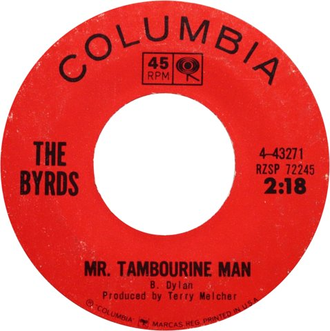

Mr. Tambourine Man by The Byrds came out on April 12, 1965, as the band's first Columbia single.
It took one verse of a long Bob Dylan song and set it to a chiming electric twelve-string.
By late July it had topped the charts in America and Britain, and folk rock had a name.

Table of Contents
- Where Did Dylan's Song Come From?
- How the Byrds Rebuilt the Song
- The January 20, 1965 Session
- Release and Chart Run
- Folk Rock and the Beatles
- FAQ
Where Did Dylan's Song Come From?
Dylan started writing it in February 1964, after a Mardi Gras stop in New Orleans on a cross-country road trip.
He finished it that spring, back in New York.
He later named guitarist Bruce Langhorne as the image behind the title.
Langhorne played a huge Turkish frame drum hung with bells.
Dylan's own recording, cut on January 15, 1965, runs 5:32 with four verses.
It came out on Bringing It All Back Home on March 22, three weeks before the Byrds single.
How the Byrds Rebuilt Mr. Tambourine Man
In August 1964, manager Jim Dickson got an acetate from Dylan's publisher.
It held an unreleased take of Dylan singing with Ramblin' Jack Elliott.
The band did not like it at first, and Dickson pushed them to keep going.
One Verse, Four Beats
- Jim McGuinn, later Roger, moved it from a 2/4 folk strum to a 4/4 rock beat.
- They kept only Dylan's second verse, so radio would play a record under two and a half minutes.
- McGuinn pitched his lead vocal somewhere between John Lennon and Dylan.
Dickson brought Dylan to a rehearsal at World Pacific Studios.
Dylan listened and said, "Wow, you can dance to that!"
Chris Hillman later wrote that the Columbia deal came through Miles Davis.
A Sunset Strip club owner played Davis the demo, and Davis called label head Goddard Lieberson.
American Songwriter tells that side of the story in full.
The January 20, 1965 Session
Producer Terry Melcher, Doris Day's son, booked Columbia's Hollywood studio.
Unsure the new band could cut it tight, he hired top Los Angeles session players.
- Hal Blaine on drums
- Larry Knechtel on bass
- Jerry Cole and Bill Pitman on guitars
- Leon Russell on electric piano, later mixed out
McGuinn was the only Byrd who played, on an electric twelve-string Rickenbacker.
Gene Clark and David Crosby sang the harmonies over his lead.
That ringing opening figure became the band's signature sound.
Release and Chart Run
Columbia issued the single on April 12, with "I Knew I'd Want You" on the B-side.
Record World made it "Sleeper of the Week" on April 24.
The band had opened a residency at Ciro's on the Sunset Strip in March.
On March 26, Dylan joined them on stage there.
| Chart | Peak |
|---|---|
| Billboard Hot 100 (US) | 1 |
| Cash Box Top 100 (US) | 1 |
| UK Singles Chart | 1 (2 weeks) |
| Ireland | 1 |
| New Zealand | 1 |
| Canada (RPM) | 2 |
| Australia | 4 |
It hit No. 1 on the Hot 100 on June 26, 1965.
It was the first recording of a Dylan song to top a pop chart.
Official Charts shows it entering the UK list on June 23 and holding No. 1 for two weeks.
The debut album, also titled Mr. Tambourine Man, followed on June 21 and reached No. 6.
See what else ruled that summer in our 1965 music guide.
Folk Rock and the Beatles
That June, the American music press began calling the sound folk rock, as our folk rock guide explains.
Dylan had already plugged in on half of his own album, but the Byrds proved the blend could top the charts.
Critic Richie Unterberger hears the jangle in Rubber Soul, on "Nowhere Man" and "If I Needed Someone."
Honors
- Grammy Hall of Fame, 1998
- No. 79 on Rolling Stone's 500 Greatest Songs of All Time, 2004
- No. 51 on our list of the best 60s songs
Is it about drugs?
Dylan has denied it, and McGuinn told biographer Johnny Rogan he heard it as "a prayer of submission."
The Wikipedia history of the song covers every version and reading.
For the rest of the band's story, read our Byrds biography or the Bob Dylan biography.
FAQ
Is Tambourine Man about drugs?
Dylan has always denied it.
Roger McGuinn heard it as a prayer of submission and sang it that way.
What did Bob Dylan think of the Byrds' version?
He liked it.
Hearing the band rehearse it, he said, "Wow, you can dance to that!"
In March 1965 he joined them on stage at Ciro's.
Who was the real Tambourine Man?
Dylan named guitarist Bruce Langhorne, who played a huge Turkish frame drum with bells on it.
Did the Byrds play on the record?
Only Roger McGuinn played.
Gene Clark and David Crosby sang harmonies, and session players cut the backing track.
What was the Byrds' biggest hit?
This one.
It was their only single to top both the Billboard Hot 100 and the UK chart.
Turn! Turn! Turn! also reached No. 1 in America.
The Billboard chart archive lists every Byrds hit that followed.
Put on the twelve-string intro and hear why Mr. Tambourine Man still sounds like the summer of 1965.